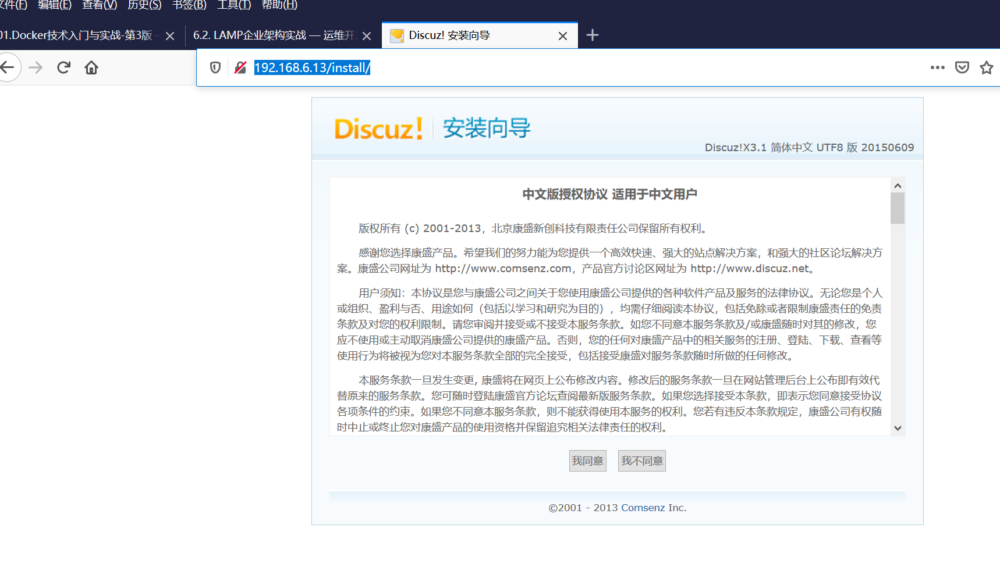

6.2. LAMP企业架构实战¶
6.2.1. LAMP企业安装配置¶
构建LAMP架构有两种方法：¶
① 使用YUM在线安装
② 基于LAMP源码编译安装
YUM现在安装方法如下：¶
yum -y install httpd mariadb-server php-mysql php
程序包版本：
httpd：2.4.6
mariadb-server：5.5.56
php-mysql（PHP连接MySQL时需要用到的驱动）：5.4.16
php：5.4.16
CentOS 7.4已经不再提供mysql-server的程序包
httpd配置文件：
1、主配置文件：/etc/httpd/conf/httpd.conf
2、辅助配置文件：/etc/httpd/conf.d/*.conf
3、模块配置文件：/etc/httpd/conf.modules.d/*.conf
mariadb配置文件：/etc/my.cnf
php配置文件：/etc/php.ini
httpd与php组合时需要用到的配置文件：/etc/httpd/conf.d/php.conf
httpd与php组合时需要用到的模块文件：/usr/lib64/httpd/modules/libphp5.so
[root@iZ2zeanknh4l64n4rnlnr6Z html]# httpd -M | grep mpm
s message mpm_prefork_module (shared)
[root@iZ2zeanknh4l64n4rnlnr6Z html]# httpd -M | grep php
s message php5_module (shared)
二、测试LAMP环境：
#systemctl start httpd.service
systemctl restart httpd.service
# systemctl start mariadb.service
# mysql_secure_installation #设置mariadb的密码
# mysql -uroot -p
create database discuz charset=utf8; #创建discuz数据库
grant all on discuz.* to discuz@'localhost' identified by "123456"; #授权discuz用户访问数据库
cat > /var/www/html/index.php <<EOF
<?php
phpinfo();
?>
EOF
访问 IP地址。
安装Discuz论坛
wget http://download.comsenz.com/DiscuzX/3.1/Discuz_X3.1_SC_UTF8.zip
unzip Discuz_X3.1_SC_UTF8.zip
cd Discuz_X3.1_SC_UTF8/
mv upload/* /var/www/html/
cd /var/www/html/
chmod 757 -R data/ uc_server/ uc_client/ config/
systemctl restart httpd.service
访问http://192.168.6.13/install/

6.2.2. LAMP企业架构拓展实战¶
LAMP架构拆分的目的用于缓解单台服务器的压力，可以将PHP、Mysql单独安装至多台服务器
实现LAP+MYSQL架构，MYSQL单独拆分出去。部署方式如下： （1）YUM安装LAMP多机方案 在Apache Web服务器上只需执行如下代码：
yum install -y httpd httpd-devel php-devel php php-mysql
在MySQL数据库服务器只需执行如下代码：
yum -y install mysql-server mysql mysql-devel mysql-libs
（2）源码安装LAMP 多机方案。 源码安装LAMP 多机方式， Apache Web 服务与MySQL 数据库服务分别部署在不同 的服务器即可，PHP 与Apache 服务部署在一台服务器， PHP 编译参数时加人如下代码进 行LAMP 的整合， mysqlnd 为PHP 远程连接MySQL 数据库服务器的一种方式。
./configure --prefix=/usr/10ca1/php5
--with-mysql=mysqlnd \
--with-mysqli=mysqlnd\
--with-pdo-mysql=mysqlnd\
--with-apxs2=/usr/local/apache/bin/apxs
make
make install
6.2.3. Centos7使用yum源安装mysql5.7.22¶
centos7使用yum源方式安装mysql5.7.22
[root@web ~]# rpm -ivh https://dev.mysql.com/get/mysql57-community-release-el7-11.noarch.rpm
#检查mysql源是否安装成功
yum repolist enabled | grep "mysql.*-community.*"
#安装MySQL
[root@web ~]# yum -y install mysql-community-server
# 启动、重启MySQL
[root@web ~]# systemctl start mysqld
systemctl restart mysqld
#开机自启动
[root@web ~]# systemctl enable mysqld.service
#修改密码
[root@web ~]# cat /var/log/mysqld.log | grep password
2018-05-08T09:07:09.591079Z 1 [Note] A temporary password is generated for root@localhost: Ipuq?4#lWyo+
[root@web ~]# mysql -uroot -p
Enter password:
输入密码"Ipuq?4#lWyo+",重置密码：
mysql> set password = password('Admin#123!');
Query OK, 0 rows affected, 1 warning (0.01 sec)
或者
mysql> ALTER USER 'root'@'localhost' IDENTIFIED BY 'MyNewPass4!';
#注意：mysql5.7默认安装了密码安全检查插件（validate_password），默认密码检查策略要求密码必须包含：大小写字母、数字和特殊符号，并且长度不能少于8位。否则会提示ERROR 1819 (HY000): Your password does not satisfy the current policy
#创建输数据库，并赋予权限
mysql> create database OMServer character set utf8 collate utf8_bin;
Query OK, 1 row affected (0.01 sec)
mysql> grant all privileges on OMServer.* to omserver_user@'%' identified by 'Omserver_user123!';
Query OK, 0 rows affected, 1 warning (0.00 sec)
默认配置文件路径：
配置文件：/etc/my.cnf
日志文件：/var/log//var/log/mysqld.log
服务启动脚本：/usr/lib/systemd/system/mysqld.service
socket文件：/var/run/mysqld/mysqld.pid
6.2.4. 忘记密码¶
如果忘记root密码，则按如下操作恢复：
在[mysqld]的段中加上一句：skip-grant-tables 保存并且退出vi。
mysql -u root
update mysql.user set authentication_string=password('admin#123!') where user='root' and Host = 'localhost';
flush privileges
修改密码策略
在/etc/my.cnf文件添加validate_password_policy配置，指定密码策略
# 选择0（LOW），1（MEDIUM），2（STRONG）其中一种，选择2需要提供密码字典文件
validate_password_policy=0
如果不需要密码策略，添加my.cnf文件中添加如下配置禁用即可：
validate_password = off
重新启动mysql服务使配置生效：
systemctl restart mysqld
参考文献